Le opere
Quadri di Anna Cristino: acrilico su tela e spatola
Al centro c’è la donna, vista come simbolo di forza interiore, resilienza e bellezza, esteriore e interiore. Intorno, il colore: il rosso è una presenza costante.
Le serie
Tre modi di raccontare
Le opere di Anna Cristino si raccontano per temi: la donna, i sentimenti, il mare e l’astratto.
Galleria
Tutte le opere, da vicino
Clicca su un’opera per ingrandirla. Per i prezzi e la disponibilità contatta direttamente l’artista.

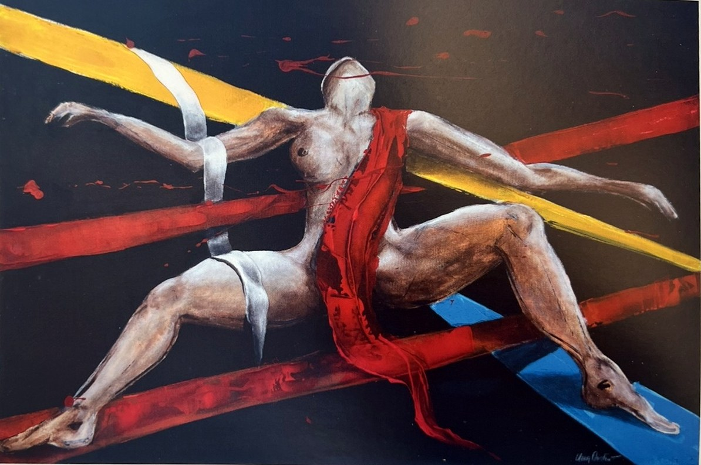


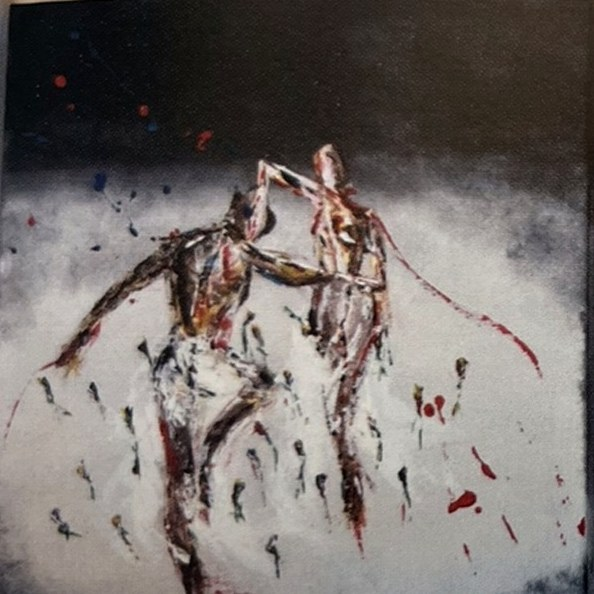

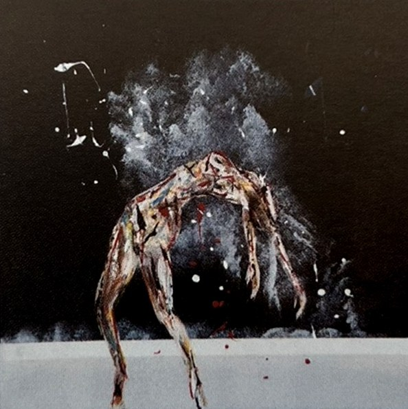

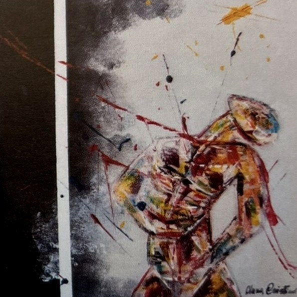

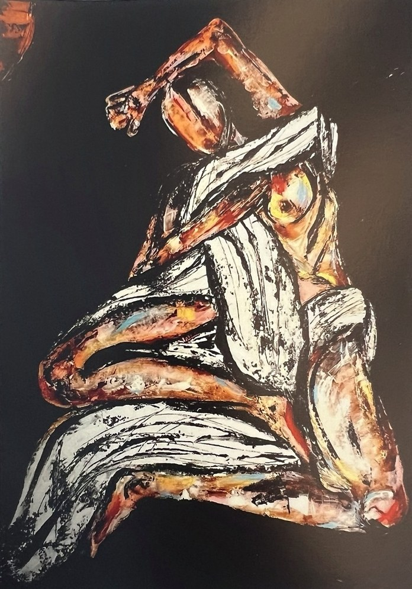


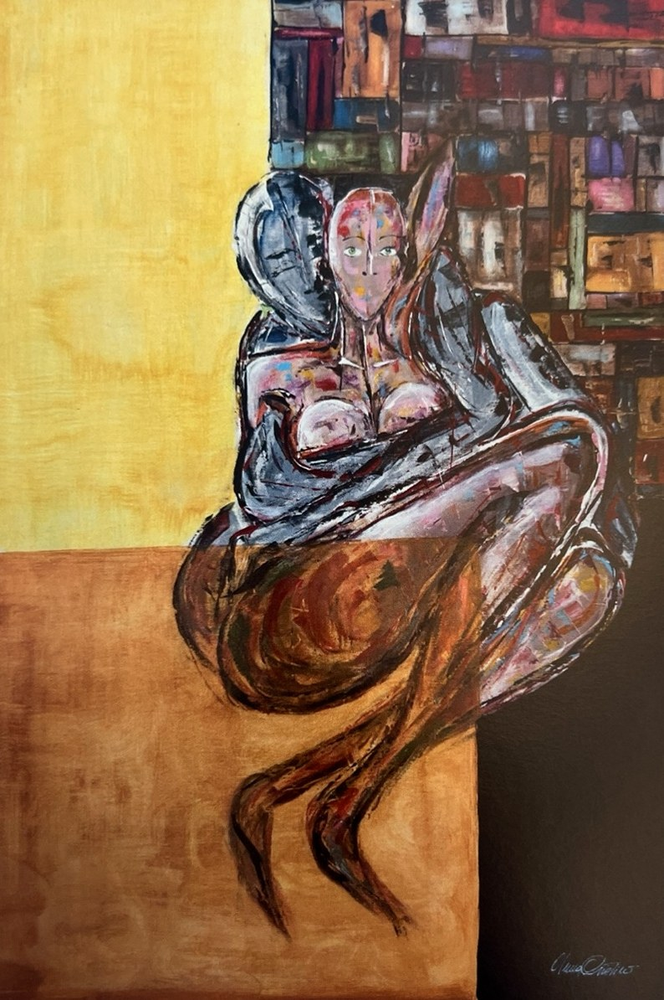


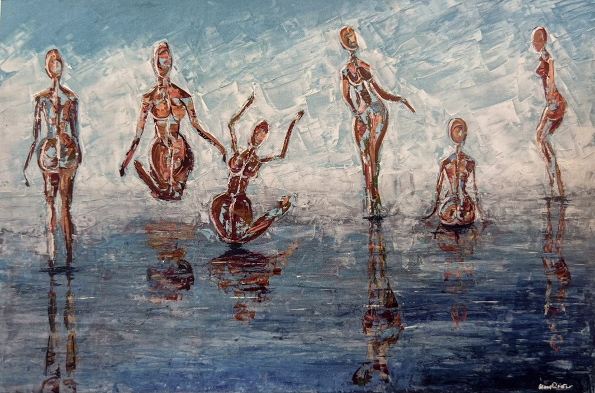


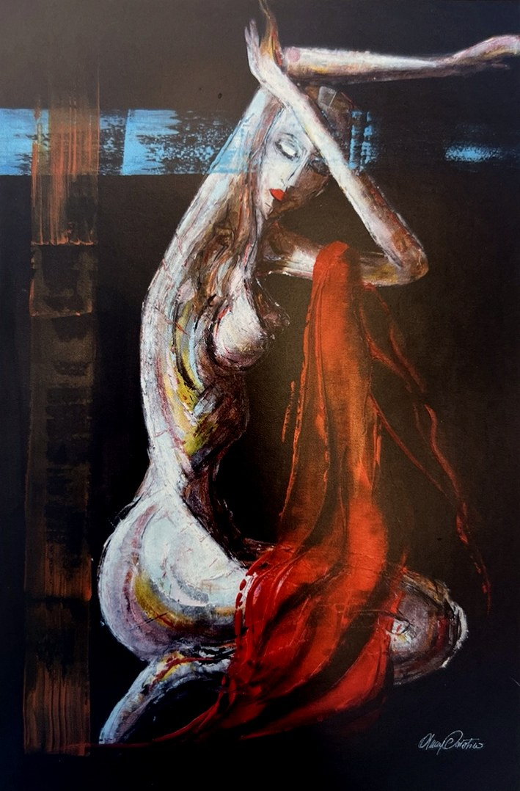


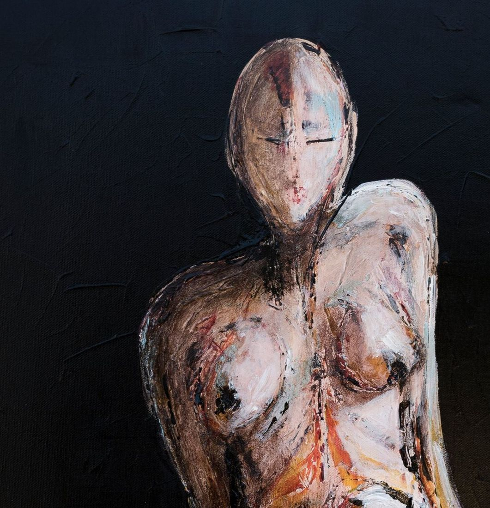


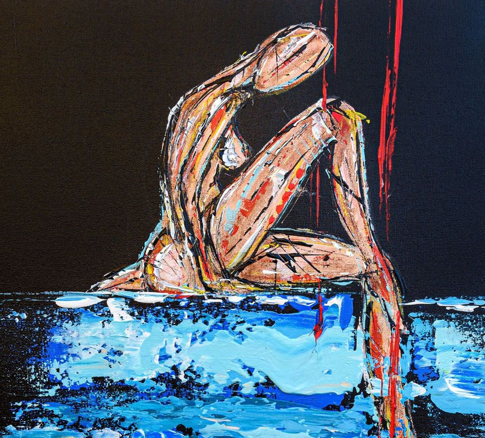

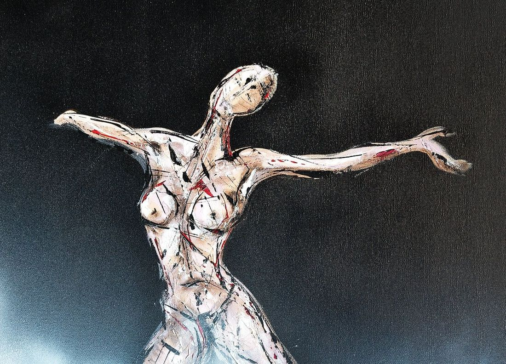

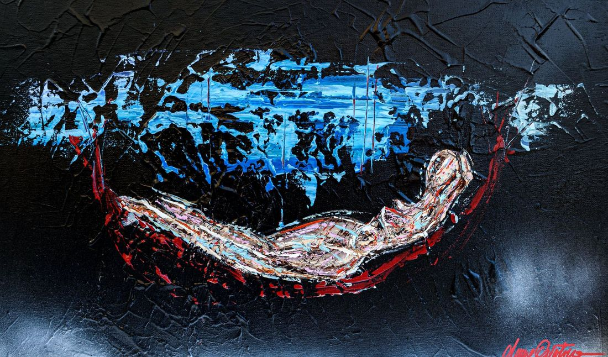

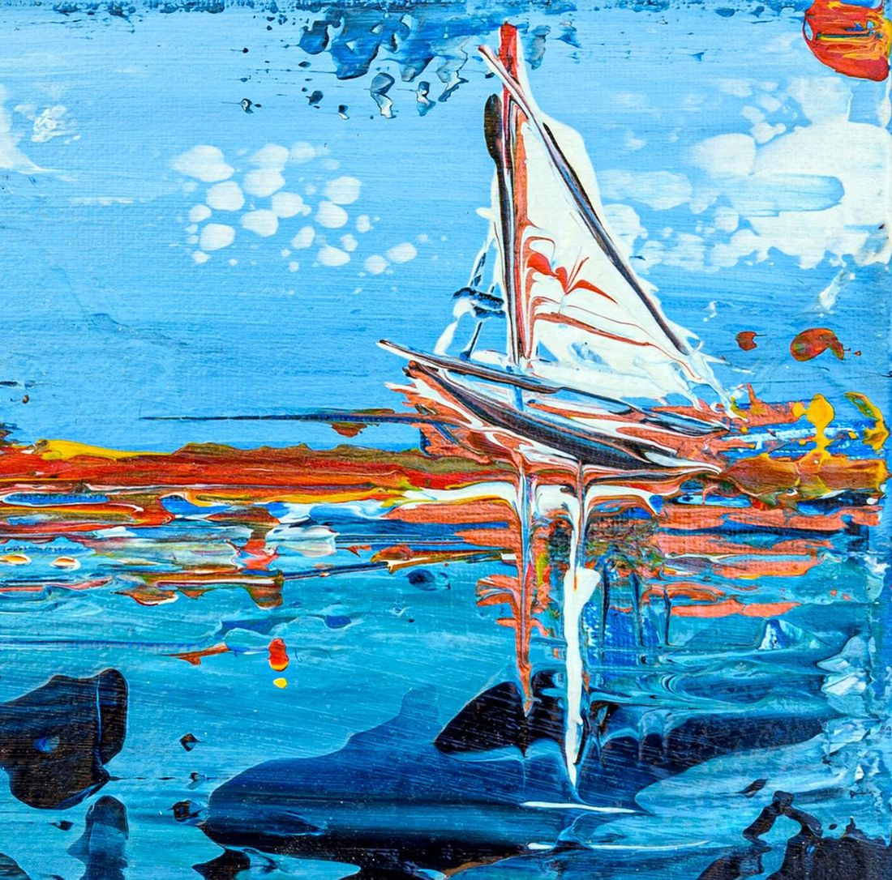

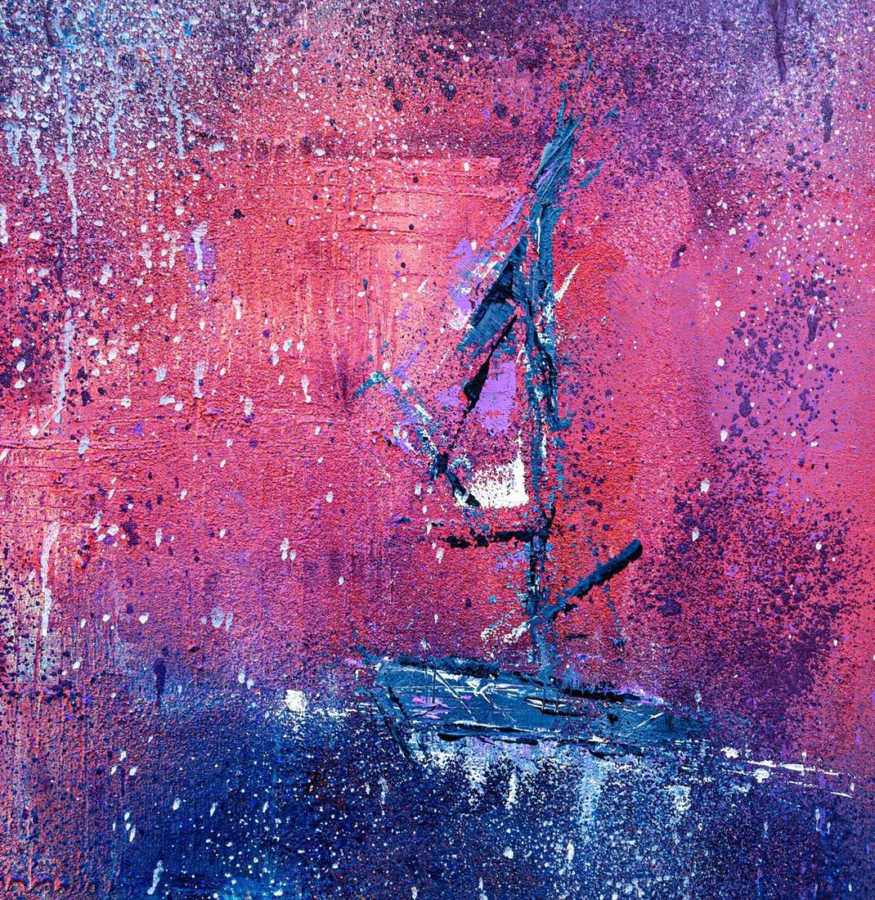

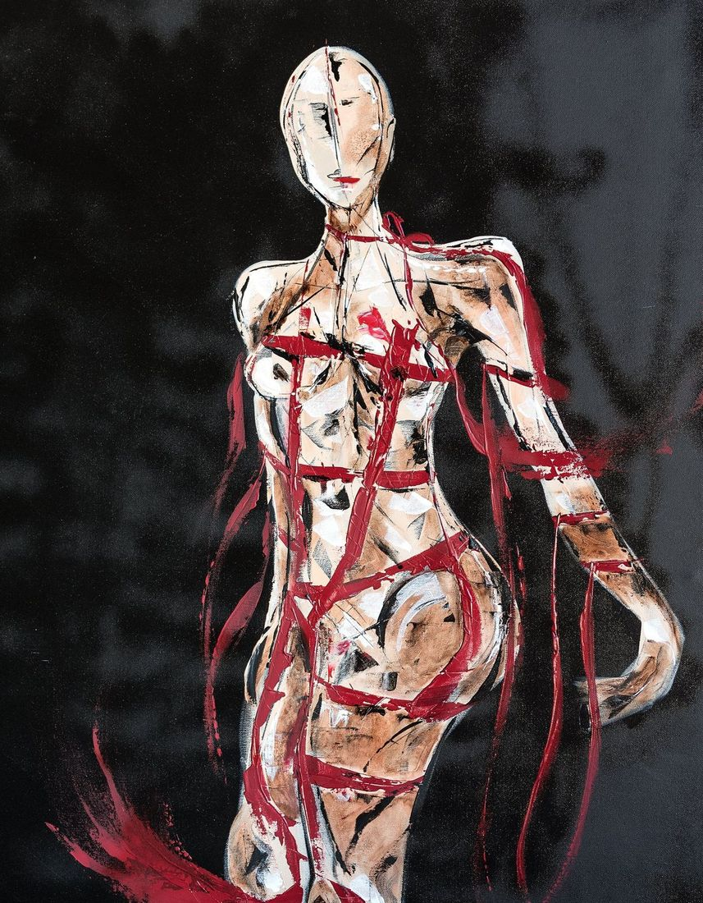
Un’opera in evidenza
Simbiosi
- Tipo
- Trittico, acrilico su tela e spatola
- Misure
- 150 × 80 cm
Opere, prezzi e commissioni
Opere, prezzi e commissioni
Per conoscere le opere in esposizione e i prezzi, o per chiedere un’opera su commissione, si contatta direttamente l’artista.